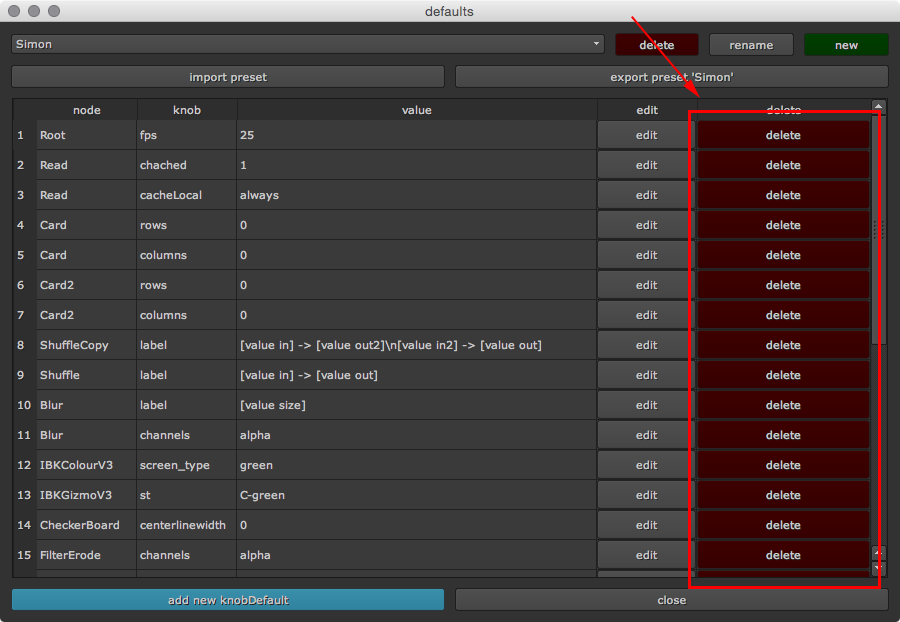

Removing a knob default¶
There are two ways to remove a knob default and revert to nuke’s default value.
Removing a knob default using the main window¶
Open the default main window, choose the knob default to remove and press the red delete button
